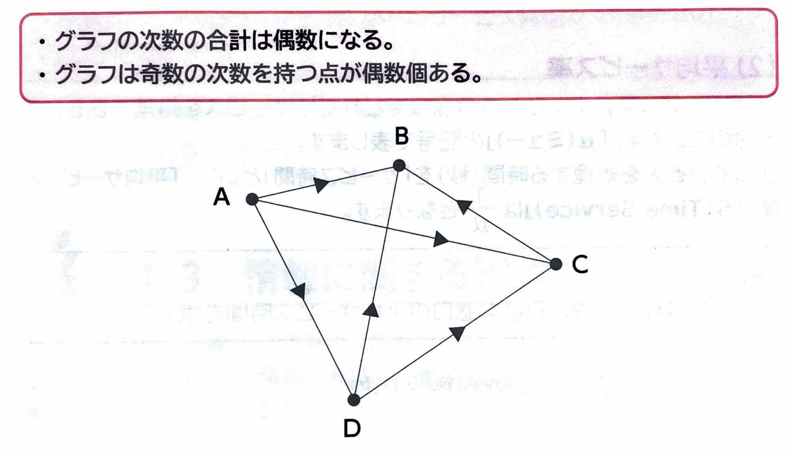

表示
｢グラフ論理｣
とは、ある要素を関連付けて整理したり、分析したりするために、要素間のつながりをグラフとして分析する手法のことです。いろいろな要素を点に置き換え、その関連性を辺で結び特徴を分析します。｢グラフ｣
は、表計算ソフトなどで作成するグラフとは異なり、点と辺で構成され、点と点のつながり方を表します。ひとつの点に付いている辺の数を｢次数｣
といいます。｢有向グラフ｣
、逆に辺の向きを考えていないグラフを｢無向グラフ｣
と呼びます。有向グラフは辺に矢印を付けて表現し、点に入ってくる、または点から出ていく方向を示します。点に入ってくる辺の数を｢入次数｣
、点から出ていく辺の数を｢出次数｣
といいます。